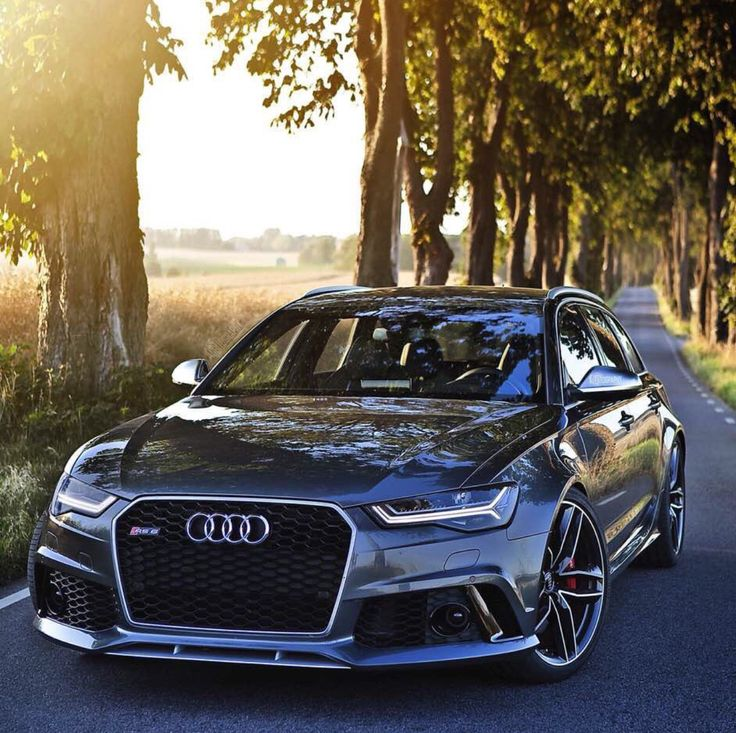
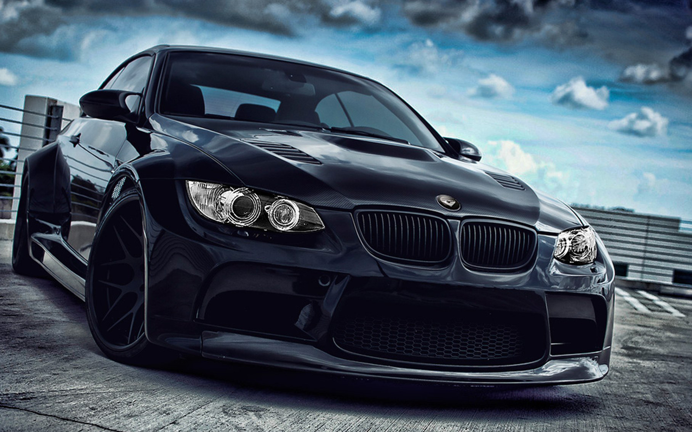
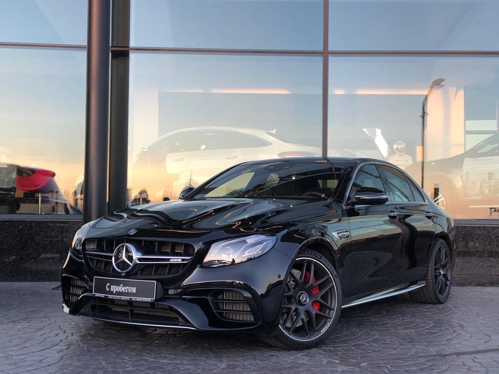

AUDI.Динамичный, проходимый, удобный, вместительный. Создан для дальних поездок в большой компании или с семьей. Высокое качество материалов как в механической части, так и в интерьере. Прощает ошибки водителя - этому способствуют многочисленные системы безопасности.
большой, удобный, комфортный, отлично рулится, экономичный (все относительно), респектабельный, красивый, тихий внутри и снаружи, ну и главное надежный!
Хорошая динамика для дизеля.
Aвто в котором на дальнее расстояние ездить действительно комфортно. Очень устойчив и на асфальте, и на гололеде, при чем на любой скорости.
ОЧЕНЬ хорошие тормоза.
B -35 заводится без вебасты - но очень долго греется.Пневмо подвеска работает идеально..
BMW.Автомобиль создан для тех кому скучно живется. Если у вас есть много свободного времени и вы подумываете стать автомехаником-электриком, тогда эта машина именно для вас!!!Покупайте эту машину сразу с инструкцией по ремонту и она станет для вас как библия.
По динамике и комфорту машина супер. Шумка отличная, качество материалов тоже не плохое. Динамика супер. Но как говорится: любишь кататься, люби и саночки чинить.
MERCEDES-BENZ.Управляемость.Обзор.Четко видно края машины,не надо как гусь шею тянуть. Окна большие.Головой в в крышу не упираешься.Экономичный.Зима от 10л. до 12л. город. в зависимости от стиля езды.Лето 8-9л. город.Пространство на передних местах.Надежный.Не дорогой в обслуживании, если не позволять вешать лапшу на уши.Проходимость для городских условий идеальная, зимний двор,весенняя колея без проблем.По деревни в дождь не вопрос.Правда резина Мишлен Кросс.Грязь месит айда-ушел.Постоянный полный привод.Лучшая стоковая музыка среди конкурентов.Бежевый салон выглядит замечательно.Уход не составляет труда.Салфетки очищающие для кожи и 20 минут времени.Панель черная не отражается в лобовое на солнце,как бывает от светлой панели.Подсветка приборов приятная,белого цвета,глаза не напрягает в ночное время.Панель подсвечивается желтоватым.Бортовой компьютер показывает множество информации.Любая лампа перегоревшая отображается на нем сразу. Омыватель стекла распыляет подогретую жидкость выше всяких похвал.Вся отделка салона,даже самые низкие панели,выполнены из очень качественного и мягкого материала.